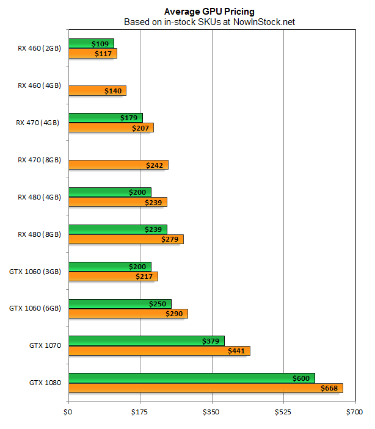
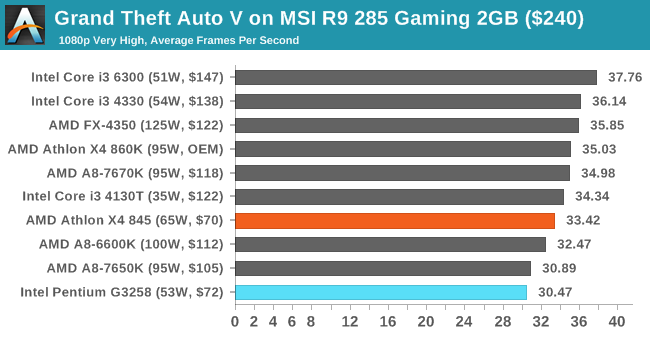
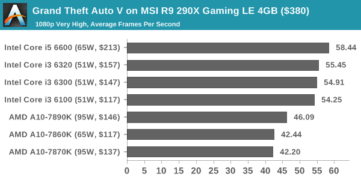
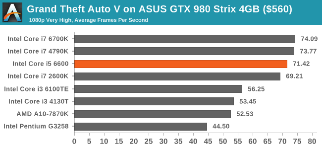

Enhancing Your gaming Experience
Mission statement
The purpose of this website is to show some of the best computer parts that people can use when building a PC. I want to make sort of a guide of some parts that you can use to make your computer faster and gaming-ready.
The reason I’m making this guide is because I’ve seen a lot of people struggling with PC parts and other kind of stuff. Playing videogames at a low framerate can be very frustrating. So, I want to show how to avoid infuriating situations like that while not spending too much money, or maybe you want to spend a little bit more, just like me!
Charts
 


Designed and Developed by: Felix J. Soto Paniagua
Date: December 06, 2016